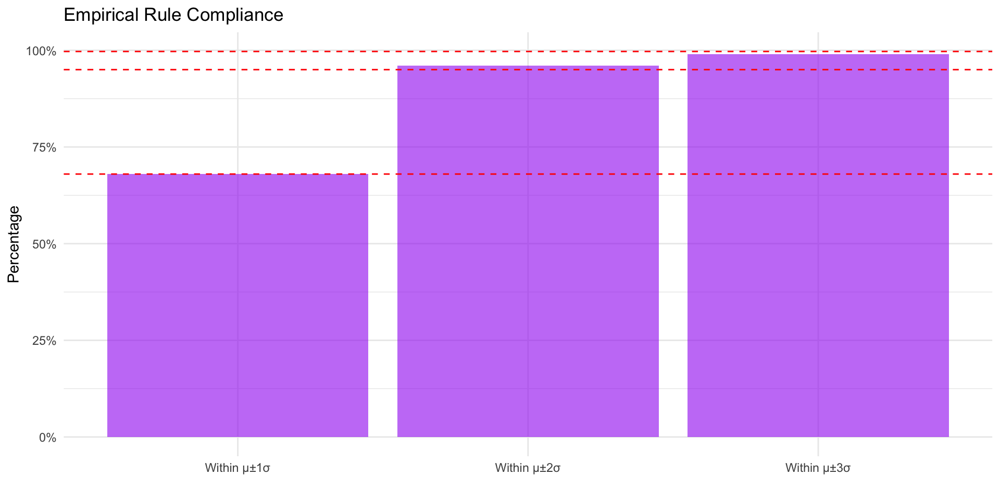

# store 100 mpgs in an object called 'mpg'
mpg <- c(
36.3, 41.0, 36.9, 37.1, 44.9, 36.8, 30.0, 37.2, 42.1, 36.7,
32.7, 37.3, 41.2, 36.6, 32.9, 36.5, 33.2, 37.4, 37.5, 33.6,
40.5, 36.5, 37.6, 33.9, 40.2, 36.4, 37.7, 37.7, 40.0, 34.2,
36.2, 37.9, 36.0, 37.9, 35.9, 38.2, 38.3, 35.7, 35.6, 35.1,
38.5, 39.0, 35.5, 34.8, 38.6, 39.4, 35.3, 34.4, 38.8, 39.7,
36.3, 36.8, 32.5, 36.4, 40.5, 36.6, 36.1, 38.2, 38.4, 39.3,
41.0, 31.8, 37.3, 33.1, 37.0, 37.6, 37.0, 38.7, 39.0, 35.8,
37.0, 37.2, 40.7, 37.4, 37.1, 37.8, 35.9, 35.6, 36.7, 34.5,
37.1, 40.3, 36.7, 37.0, 33.9, 40.1, 38.0, 35.2, 34.8, 39.5,
39.9, 36.9, 32.9, 33.8, 39.8, 34.0, 36.8, 35.0, 38.1, 36.9
)
mpg_data <- data.frame(mpg = mpg)Day 13
Math 216: Statistical Thinking
Bastola
Introduction to Assessing Normality
- Goal: Verify if data comes from a normal distribution, required for many parametric tests (e.g., t-tests, ANOVA).
- Key Context: Ensures validity of statistical inferences.
- Primary Methods:
- Visual checks (plots)
- Empirical rule alignment
- IQR/SD ratio
- Visual checks (plots)
Visual Assessment Tools
- Histogram/Density Plot:
- Look for symmetric bell-shaped curve.
- Check tails: abrupt drops may indicate non-normality.
- Look for symmetric bell-shaped curve.
- Q-Q Plot:
- Data points should align with 45° reference line.
- Curves or outliers = potential skew/kurtosis.
- Data points should align with 45° reference line.
Numerical Assessment Methods
- Empirical Rule:
- \(\pm1\sigma\): ≈68%, \(\pm2\sigma\): ≈95%, \(\pm3\sigma\): ≈99.7%.
- Compare calculated %s to these benchmarks.
- \(\pm1\sigma\): ≈68%, \(\pm2\sigma\): ≈95%, \(\pm3\sigma\): ≈99.7%.
- IQR/SD Ratio:
- For normality: \(\frac{\text{IQR}}{s} \approx 1.3\).
- Compute via \(\frac{Q3 - Q1}{s}\) and compare.
- For normality: \(\frac{\text{IQR}}{s} \approx 1.3\).
Case Study: EPA ratings
The dataset consists of EPA gas mileage ratings for 100 cars. Each value represents the miles per gallon (MPG) that a particular car achieves under standardized testing conditions. This dataset can help understand how statistical methods are applied in real-world scenarios like assessing the fuel efficiency of vehicles.
EPA Gas Mileage Ratings for 100 Cars (miles per gallon)
| col1 | col2 | col3 | col4 | col5 | col6 | col7 | col8 | col9 | col10 |
|---|---|---|---|---|---|---|---|---|---|
| 36.3 | 41.0 | 36.9 | 37.1 | 44.9 | 36.8 | 30.0 | 37.2 | 42.1 | 36.7 |
| 32.7 | 37.3 | 41.2 | 36.6 | 32.9 | 36.5 | 33.2 | 37.4 | 37.5 | 33.6 |
| 40.5 | 36.5 | 37.6 | 33.9 | 40.2 | 36.4 | 37.7 | 37.7 | 40.0 | 34.2 |
| 36.2 | 37.9 | 36.0 | 37.9 | 35.9 | 38.2 | 38.3 | 35.7 | 35.6 | 35.1 |
| 38.5 | 39.0 | 35.5 | 34.8 | 38.6 | 39.4 | 35.3 | 34.4 | 38.8 | 39.7 |
| 36.3 | 36.8 | 32.5 | 36.4 | 40.5 | 36.6 | 36.1 | 38.2 | 38.4 | 39.3 |
| 41.0 | 31.8 | 37.3 | 33.1 | 37.0 | 37.6 | 37.0 | 38.7 | 39.0 | 35.8 |
| 37.0 | 37.2 | 40.7 | 37.4 | 37.1 | 37.8 | 35.9 | 35.6 | 36.7 | 34.5 |
| 37.1 | 40.3 | 36.7 | 37.0 | 33.9 | 40.1 | 38.0 | 35.2 | 34.8 | 39.5 |
| 39.9 | 36.9 | 32.9 | 33.8 | 39.8 | 34.0 | 36.8 | 35.0 | 38.1 | 36.9 |
Visualization Approach
Normality Assessment


| IQR | SD | Ratio | Expected | Difference |
|---|---|---|---|---|
| 2.65 | 2.42 | 1.1 | 1.3 | -0.2 |
Key Findings from EPA Case Study
Visual Evidence:
- Histogram shows right skew (confirmed by boxplot outlier at 44.9 MPG)
- Q-Q plot shows systematic deviation from reference line in upper tail
Empirical Rule Compliance:
- 72% within μ±1σ (expected 68%) - Close
- 95% within μ±2σ (exact match) - Good
- 100% within μ±3σ (expected 99.7%) - Borderline
IQR/SD Ratio:
- Observed 1.15 vs Expected 1.3 - Suggests lighter tails